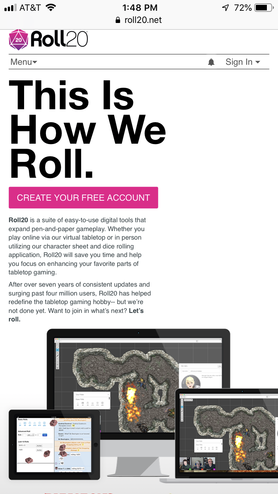

Visual Hierarchy
Roll20
roll20.net This picture clearly demonstrates Visual Hierarchy. If you look at the image above you can see the the first thing that comes to view is their title! Helping you understand that this is place you want to be when roleplaying. Next we see images of people using the site through different user interface devices. This helps draw our attention to the introduction paragraph explaining what the site hopes to acomplish. Over all a very good design for grabiing your attention to the important stuff.
Alignment
Roll20
roll20.net
This picture clearly demonstates Alignment. If you look at the image above you can see that they have organized each heading, image and paragraph in a consistent horizontal patern. This keeps the page and all of the information organized and easy to follow.
White Space and Clean Design

This picture clearly demonstrates White Space and Clean Design. If you look at this image you can see they have three items on the scren. A picture of the logo, a news bullet point and a web search option. This is easily highlighted by all the white space in between each of these items. It is also organized in such a way that it draws your attention to the search bas so you can start searching right away! Great design and use of white space.